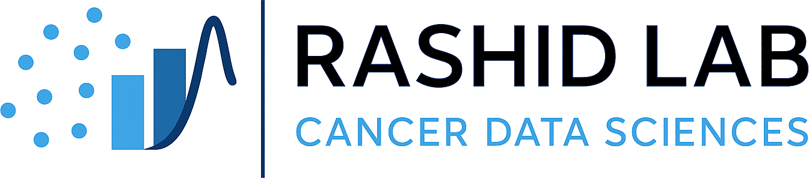

Maintaining Ownership of Our Work in the Age of AI
Department of Biostatistics · UNC Chapel Hill
What’s the worry, and is it new?
Imagine a sophisticated user. They read every line of AI output, run the diagnostics, and can defend the analysis that was produced.
Their dissertation defense goes well — until a committee member asks why they didn’t consider a different approach.
They have no answer. Not because they missed it, but because the AI never proposed it, and they had stopped generating alternatives of their own.
Neither they nor the committee notices. The defense goes well.
Composite scenario, not a specific case.
AI tools are most dangerous not when they give wrong answers, but when they give right answers you don’t understand.
The goal is not to use AI less — it’s to use it in ways that keep you learning.
Source: Rashid Lab Code Ownership Guide (March 2026)
Tools have been changing what we encode and what skills we maintain for decades.
Cognitive offloading is a well-established phenomenon: external tools improve performance while changing what we come to retain and practice internally. (Risko & Gilbert, Trends in Cognitive Sciences, 2016; Sparrow et al., Science, 2011.)
Bainbridge’s Ironies of Automation (1983) anticipated the central argument 40 years before AI: as automation grows, the human’s job becomes monitoring and judgment — and those skills atrophy without practice.
And recently, in professionals: Lee et al. (CHI 2025, n=319 knowledge workers) — higher GenAI confidence predicts less critical thinking; outputs grow more homogeneous (mechanized convergence).
What is new is the scope, not the mechanism.
I use these tools extensively. This isn’t a talk about abstinence — it’s a talk about calibration.
You already know the basics.
I’m not here to repeat what you already discuss in the comments on Gelman’s blog.
The quieter cost is what I want to focus on:
What must each of us actually hold onto, and why?
There’s a part of every project that, if you outsource it, the work goes slack.
The same sentence applies across:
The next three slides show what that part is in each.
The part you don’t outsource is the chain of judgment: framing the question; choosing methods (over alternatives the AI didn’t suggest); interpreting what the result means and what it does not; defending the work to a hostile reader.
A frequent failure mode is plausibly wrong output that survives casual inspection.
Across 576,000 code samples from 16 LLMs (mostly Python/JavaScript): commercial GPT-class models referenced nonexistent packages 5.2% of the time; open-source models, 21.7%. 200,000+ unique fabricated names.
Spracklen et al., USENIX Security 2025. Generalizes in kind to R/SAS; magnitude less established.
For us, the dangerous output isn’t a missing package. It’s a model that runs, a p-value that prints, a sensitivity analysis answering the wrong estimand.
Without your judgment, plausibly wrong passes.
The part you don’t outsource is the productive struggle.
“Conditions of instruction that make performance improve rapidly often fail to support long-term retention and transfer.”
Bjork & Bjork, 2011. From research on conventional instruction; the extension to AI-assisted learning is an extrapolation, not a finding.
The struggle is where calibrated intuition is laid down — the kind that lets each of us, today, catch a wrong answer in a paper, a colleague’s analysis, or an AI’s output.
We should be deliberate about whether AI lets the next generation skip the private wrong turns that build judgment.
The part you don’t outsource is the first encounter with a concept.
The schema gets built then, or it does not.
Concept formation is:
A student who outsources the first encounter with confounding, likelihood, or simulation often retains the answer without the schema.
The line moves over time. The distinction does not.
What does keeping understanding alive look like in practice?
The source guide is built in layers: principles → daily habits → project-level practices. We won’t walk all of them.
The ones that travel best across coding, research, and teaching share a common theme.
deliberate friction
Listen for it as we walk through the practices.
Treat AI output like a pull request from a junior developer.
Review every line. Question every design choice. Switch into reviewer mode:
Same posture for an AI-drafted methods sentence, simulation parameter, lecture example, or rubric.
If something doesn’t make sense — stop and learn the concept before accepting it.
Before prompting: 2–5 minutes writing your own approach.
Answer three questions in a scratch file:
Then prompt with your plan as context. Compare the AI’s approach to yours.
The differences are where learning happens.
A lightweight
DECISIONS.mdin every project.
## 2026-03-15: Switched simulator optimizer from BFGS to L-BFGS-B
Reason: BFGS hit memory limits for n_params > 5000.
Trade-off: ~10× memory reduction; slower per-iteration; needs warm start.
Affected: src/optim.R, sim/runner.R, methods section §3.2.The point isn’t the artifact — it’s the act of writing.
Articulating the decision forces you to understand it. The log helps teammates, reviewers, and future-you reconstruct the reasoning.
Generalizes beyond code: research projects, course curricula, manuscripts.
After AI helps you build something, close the tool.
Empirically: the self-explanation effect (Chi et al., 1989, 1994) and retrieval practice (Roediger & Karpicke, 2006) — well-evidenced mechanisms by which articulating cements understanding.
Try to explain the implementation to:
Where you get stuck is where your understanding has gaps.
And in real time — narrate at the system level, not the action level. Not “I asked for X and it worked,” but “the bug was a race condition; the mutex works because shared state is only accessed from two places.”
The thinking required to explain is the point.
A living document describing your project at a high level.
“Writing it yourself — not asking AI to generate it — is the point. The act of writing is the act of understanding.”
Rashid Lab Code Ownership Guide
For research, an analysis plan. For a course, a syllabus rationale. For a manuscript, a one-page summary.
And the question that travels everywhere: if this component fails, what’s the blast radius?
deliberate friction
The kind of struggle a learner can resolve — not arbitrary difficulty.
When learning feels effortful and resolvable, it tends to stick.
When it feels smooth, the feeling can mislead us.
Bjork & Bjork, 2011 (desirable difficulties — resolvable, not arbitrary).
Kapur, 2008 / 2016 (productive failure, distinct from unproductive failure).
Deslauriers et al., PNAS 2019 (the feeling of learning ≠ learning).
The friction isn’t the problem AI solves.
It’s the asset AI is most likely to remove.
How does this differ for our research, our trainees, our students?
Four practices from the source guide that travel well:
The work isn’t to remove AI. It’s to design assignments and reviews where understanding still has to show.
Bastani et al., PNAS 2025. Field experiment, ~1,000 high-school math students.
One study, one population, one subject. Suggestive of a broader pattern; not yet established for graduate technical training.
Design matters more than the tool.
The advisor’s standing question:
“Which struggles do I let happen, and which do I remove?”
The job isn’t to remove AI from your trainees’ work. It’s to design the struggles AI cannot remove — the parts where understanding has to be built, not produced.
Concrete moves:
You are also someone whose intuition and judgment have to be maintained.
The same practices apply to your own work:
DECISIONS.md for your active research projects, not just your code.The trainees you mentor will calibrate to the practices you actually keep.
For many in clinical trials, biopharma, and industry, the line isn’t personal — it’s drawn by SOPs, sponsor protocols, FDA, and QA.
The same practices apply, with an audit-trail layer:
Data residency: hosted-LLM use with patient or confidential sponsor data may violate institutional policy or trigger privacy/security review. Local/on-prem deployments — and the productivity gap they create — are part of the calibration.
The line is drawn by your sponsor, the FDA, and your QA group — not by you alone.
Where do you draw the line — and how does it shift across activities?
The columns are stable. The items shift by activity, by stakes, and by where you are in your career.
Where the columns sit on this grid is yours, not mine.
It will be different for you than for me.
Different for our trainees than for either of us.
Different for code than for analysis than for teaching.
The discipline isn’t where you draw the line.
It’s that you are deliberate about drawing one at all.
To stay deliberate, an honest self-check — and one for your group.
For yourself:
For your trainees:
For yourself, as advisor:
The questions are diagnostic, not judgmental. If something gets a “no” — the next slide is where to start.
If something on the previous slide got a “no” — start here, in order.
DECISIONS.md in your active project this week.Adopt one. Add the next when the first feels routine.
A year in: you can defend your work without your notes; your trainees can defend theirs.
From the source guide’s quick-start checklist, lightly reordered.
AI didn’t make people worse drivers,
but it did make many people worse at knowing where they are.
The people who still have a sense of direction are the ones who glance at the map occasionally, notice landmarks, and pay attention to the route — even while GPS is guiding them.
From the source guide.
Maintaining Ownership of Our Work in the Age of AI
not because we don’t trust the GPS,
but because we still want to know where we are when we arrive.
Thank you · Questions welcome
naim@unc.edu · naimurashid.github.io · LinkedIn: Naim Rashid · GitHub: @naimurashid

StatsUp.AI Webinar · American Statistical Association